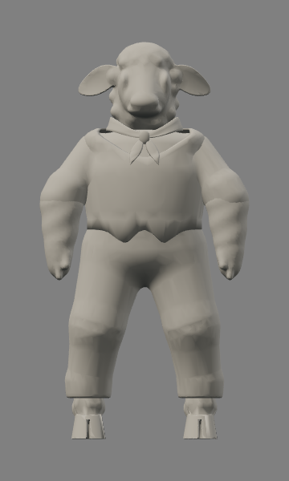
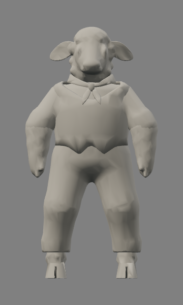
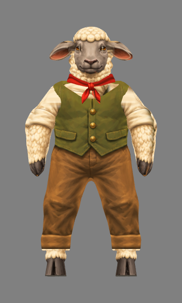
Reference and model use equal standing height (head to sole), without changing prototype dimensions. Close views use 300 px/unit; native views use 58 px/unit. Front/profile use the approved turnaround. Three-quarter/gameplay use the original illustrated sprite, whose view angle is approximate. Neutral pose exposes the wool, waistcoat and trouser silhouettes.



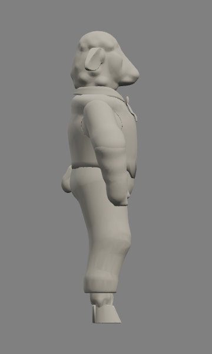
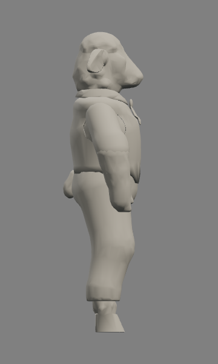
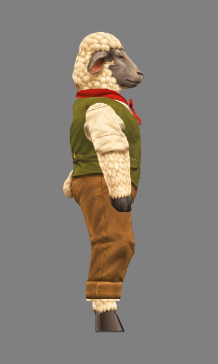

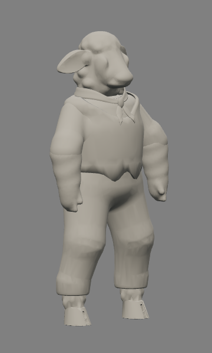
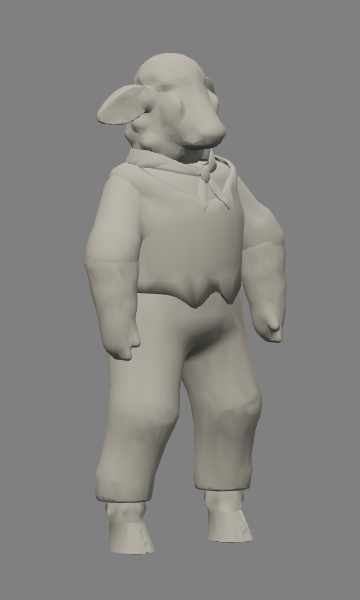
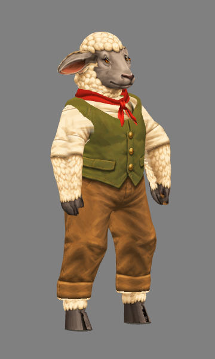
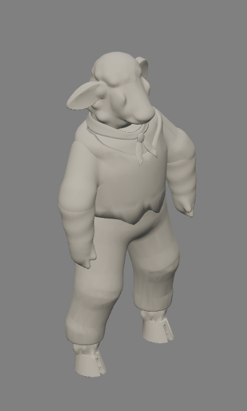
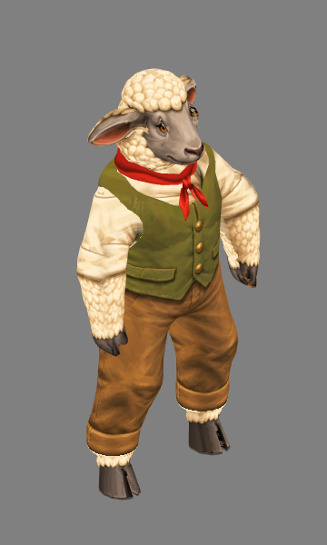
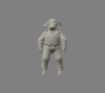
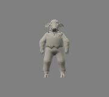
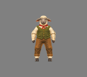
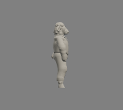
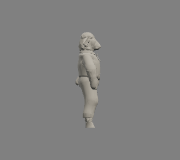
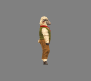
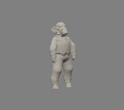
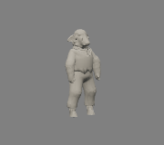
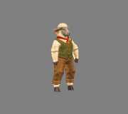
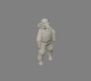
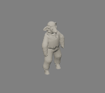
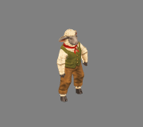